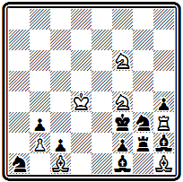
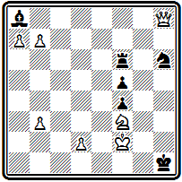
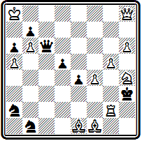
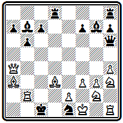
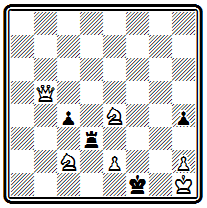
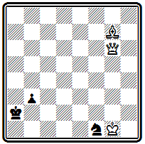
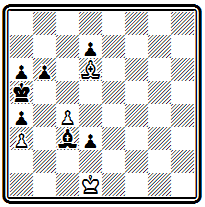
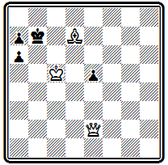
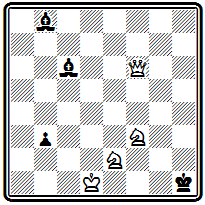

С. Лойд 1856

Мат в 14 хода
Белый король должен проникнуть на h4, но только по черным полям (если он станет на белое поле, то черные дадут шах слоном, сыграют f1Ф и развяжут узел фигур на королевском фланге) и притом таким образом, чтобы очередь хода оказалась за противником,— в этом случае на Cg1 последует Л:g3#. Однако нетрудно убедиться, что прямая попытка достичь цели ни к чему не приводит, так как в цугцванг попадут белые, а не черные. Выиграть темп можно лишь следующим оригинальным способом:
1. Kpd4- с 5! С h2-g1 2. Крс 5-b6 Cg1-h2 3. Kpb 6- a 7 Ch 2- g1 4. Кра7- а8!! (только здесь белый король обезопасен от шахов слоном)
4... Cg1 - h 2 5. Кра8- b 8! Ch 2- g1 6. Kpb8-c7 Cg1-h2 7. Kpc7-d8(d6) Ch2-g1 8. Kpd 8( d 6)- e 7 Cg1 - h 2 9. Kpe 7- f 8 Ch 2- g1 10. Kpf 8 -g 7 Cg1-h 2
11. Kpg 7- h 6 Ch 2- g1 12. Kph 6- g 5 Cg1 - h 2 13. Kpg 5: h 4 Ch 2- g1 14. Л h 3: g 3# или 13... С~ 14. Ch 1: g 2#.
Эту задачу Лойд составил, когда ему было всего 15 лет! Как и многие другие его находки, задача вызвала многочисленные подражания.
В подобном же стиле построена и проблема № 000, содержащая два симметричных варианта с яркой идеей.
№ 284
С. Лойд «Цинцинати газетт», 1859 г.

Мат в 3 хода
Первым ходом ферзь нападает на ладью f4 и предлагает себя в жертву обеим ладьям 1. Ф f 2. Беря ферзя, ладьи совершают критический ход, переходя через поле, на котором каждая из них на следующем ходу будет перекрываться собственным слоном. В самом деле, 1 ... Л f : f 2 2. Ке7 (с угрозой 3. Кс6#) 2... С f 3 3. Kf 5# с использованием перекрытия ладьи. Аналогично при взятии ферзя другой ладьей: 1… Л d : f 2 2. Ка3 ~ 3. К b 5# или 2... Се2 3. Кс2 # .
Подобные задачи (а их число можно значительно увеличить) показывают, что Лойд как бы шутя, между прочим, сделал много важных открытий в области стратегических идей, которые в дальнейшем прочно вошли в багаж современной тематики.
Лойд считал, что три хода являются нормальным и достаточным количеством для воплощения любой шахматной идеи. Очень редкие замыслы, по его мнению, получили лучшее представление с большим числом ходов. Позиции в два хода слишком легки, а в четыре — трудны для широкой массы шахматистов. Сам он всегда отдавал предпочтение трехходовкам. В сборнике его задач почти половина — трехходовки.
Тем не менее и в области двухходовки Лойд создал ряд выдающихся произведений. Задача № 000 является превосходным образцом двухходовки на цугцванг. В начальном положении трудно заподозрить, что у черных может не оказаться выжидательного хода.
№ 285
С. Лойд «Филадельфиа ивнинг бюллетин», 1858 г.

Мат в 2 хода
Однако после блестящего 1. Фа1, которым ферзь ставится в засаду, оказывается, что ладья привязана к защите двух полей а8 и е3, а ферзь скован охраной пунктов b6 и h1. Совсем отрицательно относился Лойд к многоходовкам. Он прямо писал о «причудах наших предков, сомнительные заслуги которых состоят в непомерном растягивании ходов». Сам Лойд многоходовок почти не составлял и весьма скептически относился к начавшемуся в начале
80-х годов развитию этого жанра. Об одной своей многоходовке -
С. Лойд «Сэтерди курир», 1856

Мат в 14 ходов
он писал, что идея в ней по существу двух - или трехходовая, но он легко переделал ее в 14-ходовку «и не видит основания, почему бы чудище этого рода не довести до тысячи ходов». Король белых должен попасть на h4 в тот момент, когда слон черных стоит на h2. Идти король может только по черным полям, так как в противном случае черные освободятся, объявляя шах слоном f1; поэтому, чтобы выиграть темп, он должен «завернуть» на а8:
1. Крс5, 2. Кр b6 , 3. Кра7, 4. Кра8, 5. Кр b 8, 6. Крс7, 7. Kpd 8, 8. Кре7, 9. Kpf 8, 10. Kpg 7, 11 . Кр h6 , 12. Kpg 5 , 13. Kp : h 4 , 14. Л: g 3 #.
Будь в начальном положении ход черных, белый король мог бы двигаться к h4 без захода на а8 — это сокращает решение на несколько ходов. Признанным чемпионом композиторов европейского континента был Байер. Лойд пытался состязаться с ним на больших международных конкурсах, но неудачно. В Нью-Йоркском конкурсе 1857 г. посылка Лойда была оценена ниже посылки Байера. То же повторилось и в Парижском конкурсе 1867 г. И только в следующем Парижском конкурсе 1878 г. Лойду удалось взять реванш —он стал выше Байера. Оценивая теперь, через десятки лет, это соревнование двух титанов задачной композиции, нельзя сказать, что оценки судей были объективными и правильными. Они просто не могли понять своеобразие и необычность стиля Лойда.
Лойд выступил в Парижском конкурсе 1867 г. с посылкой под девизом: «Красота предпочтительнее трудности». Это было прямым вызовом Байеру, задачи которого отличались именно трудностью решения. В соответствии с условиями конкурса Лойд три задачи включил из числа ранее опубликованных. Вот эти произведения.
Позиция № 000 при внешней простоте содержит яркую идею.
№ 286
С. Лойд «Цинцинати диспэтч», 1858 г.

Мат в 3 хода
Не будь слона g2, белые объявили бы мат в 2 хода. Слон мешает, его надо убрать. Единственная возможность увести слона в угол 1. Са8, чтобы по освобожденной линии ферзь мог пройти тот же путь в обратном направлении,— это 2. Ф b 7 и 3. Ф h 1#. Замысел этого варианта схож с идеей Тертона, но отличается тем, что здесь сила освобождающей путь фигуры при объявлении мата не используется. Черные в состоянии защититься от угрозы, но белые находят новые пути к мату: 1… Kd 6 2. Ф b 6; 1 ... f 4 2. Ф g 6, 1 ... Кр f1 2. Ф: f 5 + (не 2. Ф b 7 e1 К!),
Задача № 000 — знаменитый «Excelsior» («Все выше!»).
№ 287
С. Лойд «Эра», 1861 г.

Мат в 5 ходов
Трудно по начальному положению предположить, что «героем» явится скромная пешка b2. Тем более замечательно и достойно удивления, какими простыми средствами это достигается: 1. b 4 (грозит 2. Л d ( f )5 с матом по первой горизонтали) 1… Лс5+ (лучший ответ; 1... Лс 6 2. Л d 5 , 1 ... Л:с2 2. К:с2, 1 ... Cg 5 2. Л f 5) 2. bc a 2 (грозило 3. Л b 1#) 3. c6 (снова грозит мат после 4. Л d ( f )5) 3... Сс7 4. cb . и, независимо от ответа черных, замурованный предыдущим ходом слона черный конь становится жертвой пешки b7, которая дает мат 5. b аФ#. Скромная белая пешка в пять ходов проделала путь от b2 до а8.
Впервые тема «эксцельсиор» была представлена в следующей задаче Лабурдоне:

Мат в 7 ходов
1. Ф b 3+ Л: b 3+ 2. а b + Кр b 4 3. b а+ Кра5 4. ab + Кр b 6 5. b а+ Кра7 6. ab + Кр b 8 7. b аФ#.
В примере № 000 оригинально мотивировано превращение пешки в легкую фигуру.
№ 288
С. Лойд «Иллюстрейтид лондон ньюс», 1867 г.

Мат в 3 хода
Белым надо уничтожить слона а8. чтобы подготовить цугцванг. После взятия слона черные смогут играть только ладьей, но зато откроется путь ферзю на а1. Казалось бы, неважно, в какую фигуру превратить пешку на а8. Но оказывается, у черных имеется ход 1… Ла6, защищающий поле a1, и даже если поставить на а8 второго ферзя, белые не смогут дать мат в 2 хода. Парадоксально, но конь на а8 в этой позиции сильнее ферзя!
После 1. ba К на 1... Ла6 решает 2. К b 6, Конь выключает ладью от поля h6, с которого грозит дать мат ферзь, а на 2... Л: b 6 матует 3. Фа1#, так как ладья закрыта пешкой b2.
Аналогичный маневр при превращении в ферзя 1. b аФ не проходил, так как после 1… Ла6 2. Фе6 взятие ферзя 2... Л:с 6 защищало от мата.
Из трех оригинальных, до того не печатавшихся композиций, входивших в посылку Лойда на Парижском конкурсе, приведем две.
Задача № 000 поражает остротой неожиданного вступительного хода.
№ 289
С. Лойд Парижский конкурс, 1867 г. II приз

Мат в 4 хода
Белые отказываются от сильнейшей батареи, уже нацеленной на короля, жертвуют слона, дают черным возможность объявлять шахи на вскрышку: 1. С:а 6 . Этот самый невероятный в данной позиции ход имеет далекую цель — поле с8, на котором надо обеспечить поддержку ферзя: 1… b а+ 2. b 7 (теперь черные снова могут объявлять шахи, но все они бесцельны) 2... Фе 6 3. Фс8; 1 ... Фс5 2. Фе8 Феб 3. Ф:с6; 1... Фс2 2. Се2 Ф:е2 3. Фс8+; 1… Кс3 2. С: b 7 Ф: b 7+ 3. Кр: b 7.
В начальном положении примера № 000 есть готовые ответы на ходы короля, но черные могут двигать пешки.
№ 290
С. Лойд Парижский конкурс, 1867 г. II приз

Мат в 4 хода
В главном варианте белые играют ферзем с таким расчетом, чтобы вернуться на исходную позицию после исчерпания ходов пешками и заставить двинуться короля: 1. Фа8 g 2 2. Ф g 8 d 6 3. Ф d 5 с матами 3... Кр:с2 4. Фа2# и 3... Кр:е2 4. Ф: g 2#. В варианте 1... d 6 2. Фа1 на ходы короля следуют другие ответы: 2... Кр:е(с)2 3. Ф f(b ) 1 +.
Сравнивая задачи из посылки Лойда с произведениями посылки Байера, участвовавшем в том же конкурсе и получившей 1 приз, нельзя не заключить, что красота задач Лойда превосходит трудность Байера. Задачи Байера академичны, сухи, у Лойда же пленяют искрящееся остроумие, свежесть и новизна. В этой связи уместно привести мнение одного из выдающихся шахматистов того времени Стаунтона, который в рецензии на сборник американских задач писал: «Большинство любителей шахматных задач, которые цель композиции связывают с глубиной стратегии, ставят Байера выше Лойда. Мы подозреваем, однако, что широкая публика предпочитает обратное».
В наши дни мы можем судить об этом соперничестве совершенно беспристрастно. Свершился самый объективный суд — суд времени. И он вынес решение в пользу Лойда. Вряд ли найдется сейчас шахматист самой малой квалификации, лишь начинающий постигать премудрости шахмат, который бы не слышал о Лойде и не знал хотя бы одно его произведение. С задачами же Байера большинство читателей, не принадлежащих к числу композиторов, вероятно, впервые знакомится из этой книги.
Неизгладимое впечатление производит композиция № 000.
№ 291
С. Лойд «Лейпцигер иллюстрирте цейтунг», 1869 г.

Мат в 3 хода
Лойд составил ее во время путешествия по Германии. Она была опубликована в статье И. Цукерторта, который назвал ее «бриллиантом в скромной оправе». Даже Байер отозвался о ней как о «блестящем примере глубокой стратегии». Другие, менее серьезные, критики усмотрели в проходящем красной нитью через задачу упорном преследовании слона ферзем картину настойчивой любви дамы к офицеру. 1. Ф f 1 с угрозой 2. Ф b 1, нападая на поле h7, но держа под ударом слона, чтобы иметь ответ 2… g 6 3. Ф: al #. Уход слона на b2 дела не меняет. На 1... Cc 3( d 4) ферзь нападает с другого поля: 2. Ф d 3, при 1 ... Се 5 ( f 6) решает 2. Ф f 5 с аналогичными финалами. Дополнительный вариант - 1… g 3 2. Kg 6+ hg 3. Ф h3#.
Лойд не мог, конечно, пройти мимо знаменитой «индийской задачи». Одна из его вариаций на эту тему приведена на диаграмме № 000.
№ 292
С. Лойд Филадельфийский конкурс, 1876 г. II приз

Мат в 4 хода
В главном варианте 1. Л d 8 d 2 2 . Ch 3 е2 3. Cd 7 de 4. Cf 5# выключение белой фигуры на критическом пате приводит к развязыванию черной пешки.
В кратком очерке, понятно, невозможно охарактеризовать все многообразие идей творчества Лойда, Бьющая через край фантазия и искрящийся юмор выражались и шахматными средствами, в оригинальных ситуациях, развертывающихся на доске, и занимательными историями, связанными с той или иной задачей, и остроумными девизами, которыми Лойд часто снабжал свои произведения. Собрание задач Лойда, любовно подобранных и изданных А. Уайтом (55), представляет для любителя шахмат неисчерпаемый источник удовольствия. В текущем году сборник избранных композиций Лойда впервые вышел на русском языке (автор , 56).
В 1878 г. Лойд выпустил большую работу, назвав ее «Шахматная стратегия» (57). Это очень интересная книга о шахматной композиции, написанная в форме непринужденных бесед с читателем на самые различные темы, связанные с задачами. Книга иллюстрирована большим количеством — более полутысячи — произведений автора. Лойд затрагивает весьма широкий круг вопросов, относящихся и к технике, и к самому существу, идейному богатству задачи. Книга Лойда появилась раньше других книг по теории композиции, которым предстояло выйти в европейских странах в течение ближайших десяти лет. Лойд не пытался формулировать какие-то нормы, правила составления задач. Всякая канонизация неизбежно означает ограничение, а это органически чуждо Лойду. Он не примыкал ни к какой определенной школе, оставляя за собой свободу работать в любом направлении. На всем протяжении творческой деятельности Лойда, а длилась она свыше полувека, его неизменно занимала одна мысль: яркость и неожиданность замысла.
Кто, кроме Лойда, осмелился бы выступить в конце XIX века с задачей, подобной его двухходовке № 000?
№ 293
С. Лойд «Нью-Йорк санди гералд», 1889 г.

Мат в 2 хода
Слон покидает сильнейшую позицию, оставляя беззащитной ладью, проделывает длиннейший путь, чтобы стать в засаду за вражеского слона:
1. С f 8 С: b 2 2. С: h 6 #. Эта идея, названная американо-индийской, разрабатывалась многими авторами, которые соревновались в наиболее экономичном ее представлении. Сам Лойд повторил ее через три года в другом, фронтальном, механизме. Но ни в одной из этих композиций не удалось достичь того поразительного эффекта, который производит первое произведение Лойда.
Задача № 000 является достойным завершающим аккордом всего творчества Лойда.
№ 294
С. Лойд «Чекмейт», 1903 г. I приз

Мат в 3 хода
Нельзя не согласиться с тем, что эта задача является «самым колоссальным трюком всех времен». Действительно, кому придет в голову, решая задачу, покинуть королем надежное укрытие и пуститься в отчаянное плавание навстречу опасностям и угрозам. Но Лойд делает это! 1. Кре2— черным предоставляется возможность превратить пешку в ферзя и объявить двойной шах, от которого, казалось бы, нет спасения: 1… f 1Ф+ 2. Кре3 — наперекор стихиям король идет к заветной цели! Черные могут объявить множество разнообразных шахов, но они не в силах предотвратить мат одной из белых батарей. Если черные, убедившись в беспомощности ферзя, попытаются превратить пешку в коня 1… f 1К+ то их ждет ответ 2. Л f 2+. Задача имела девиз «Гамбит Стейница». Характеризующий этот гамбит ход короля— 1.с4 е5 2. Кс3 Кс6 3. f 4 ef 4. d 4 Ф h 4+ 5. Кре2— совпадает с первым ходом решения задачи.
Новый подъем в развитии задачной композиции в США наступает около 1870 г. В этом году возникает новый шахматный журнал «Дюбук чесс джорнэл», уделявший большое внимание композиции и регулярно проводивший конкурсы составления задач. В том же году начинает свой творческий путь замечательный американский композитор В. Шинкман. который явился сподвижником и продолжателем Лойда.
Период наибольшей активности у Лойда закончился в I860 г. Теперь, в 70-е годы, Шинкман стал более ревностным пропагандистом лойдовских идеи, чем даже сам Лойд.
Творческие воззрения этих двух композиторов полностью совпадали. О. Вюрцбург в предисловии к сборнику задач Шинкмана, выпушенному Уайтом в 1929 г. (58), писал: «Я не знаю двух композиторов, которые бы так походили друг на друга. Их взгляды были абсолютно одинаковыми».
Это единство как бы нашло символическое выражение в том, что оба автора независимо и в одно время составили композицию № 000, посланную ими в составе своих посылок на одни и тот же конкурс, который был проведен в связи с III Американским шахматным конгрессом в Филадельфии в 1876 г., приуроченным к празднованию столетии Американской революции.
№ 000
С. Лойд и В. Шинкман Филадельфийский конкурс, 1876 г.

Мат в 3 хода
Единственное различие заключалось в том, что у Лойда первый ход 1. Фс3 делался не с bЗ, а с d2, причем у черного короля отнималось поле f3, но зато ему одновременно предоставлялись два других поля. Основные варианты: 1... Kpf4 2. Kd2; 1... Kpd5 2. Л d2+; 1... Kf2 2. Фе 5+; 1... Kg3 2. Ф d4+; 1... h5 2. Kg 5+.
Конечно, между Лойдом и Шинкманом были и различия. Лойд начал работать на заре современной композиции, перед ним лежало нераспаханное поле задачной тематики, и он черпал из него идеи, если можно так выразиться, шутя и играючи. Шинкман творил позже, ему труднее было быть таким же оригинальным, но зато он имел большое преимущество в технике, Шинкман иногда возвращается к идеям Лойда и реализует их во всеоружии опыта.
Примером может служить задача № 000, в которой получает дальнейшее развитие идея одновременного нападения.
№ 000
В. Шинкман «Детройт фри пресс», 1882 г.

Мат в 3 хода
Здесь белый ферзь атакует сразу две черные ладьи, привязанные к защите полей а7 и b8. После 1. Kph1 черные в цугцванге: 1... Ла 6 2. Фе2; 1... Ла4 2. Ф e 4; 1... Л:а2 2. Ф f 7; 1... Лс8 2. Ф f 5; 1… Л d 8 2. Ф d 5; 1 … Л h8 2. Фс 3 ; 1 … h 4 2. Ф h 5.
Шинкмана, как и Лойда, отличало необычайное многообразие. Он почти никогда не повторялся. В каждой его задаче находится что-то новое, а ведь его творческое наследие насчитывает свыше 3000 произведений!
Задача № 000 иллюстрирует излюбленный прием Шинкмана при построении первого хода.
№ 000
В. Шинкман «Дейче шахцейтунг», 1875 г.

Мат в 3 хода
Казалось бы, что может быть естественнее и сильнее, чем прямая атака на короля 1. Ф d 7+? Однако после 1... Кр: f 6 приходится отрезать королю пути бегства, и 2. Cf 4 ведет к пату. Ферзь действительно должен попасть на седьмую горизонталь, но гораздо более «деликатным» способом: 1. Фа7. Теперь в случае 1... Кр: f 6 ход 2. Cf 4 достигает цели (2… Кр: f 5 3. Ф f 7 #), а при других отходах решает 2. Cd 6.
Шинкман очень любил построение эхо-вариантов. Вот красивый пример № 000,
№ 000
В. Шинкман «Хаддерсфилд колледж мэгезин», 1880 г.

Мат в 3 хода
После 1. e 3 черные в цугцванге. На безразличный уход черной ладьи следует 2. Ф:с4+. Ладья предупреждает эту угрозу зашитой полей с4 или е2. Тогда получаются две пары картинных эхо-вариантов с правильными матами: 1... Л : е 3 2. Ф b1+ Кре 2 3. Kd4#; 1... Л d2 2. Ф f 5+ Кре2 3. Кс3#; 1... Л d 4 2. К: d 4 Kpe 1 3. Ф b 1#; 1... Лс3 2. К:с3 Кр f 2 3. Ф f 5 #. Дополнительные варианты: 1... Кре2 2. Ф h 5+ и 1... h 3 2. Kg 3 + .
Несложное построение и нетрудное решение имеет задача № 000, но замысел ее очень остроумен.
№ 000
В. Шинкман «Миррор оф америкэн спортс», 1885 г.

Мат в 4 хода
Черные беспомощны, у них остались лишь два хода пешками «d», однако белым не просто использовать свое преимущество. Напрашивается мат ферзем по диагонали h8-c3, но как туда попасть, если ферзь загорожен собственными фигурами? Две ладьи должны услужливо проложить ему путь:
1. Л h 7 d 2 2. Ла8 d 3 3. Фа7 и 4. Ф g 7 #. Последовательно дважды проведенное освобождение линий.
И снова пример иного рода — миниатюра № 000 с несколькими правильными матами и тихими вариантами:
№ 000
В. Шинкман «Сент-Джонс илоб», 1890 г. I приз

Мат в 3 хода
1. Фd6 b2 2. Ф b 4 b 1Ф 3. Фа4# или 2... К~ 3. Ф: b 2#; 1... К~ 2. Ф d 2+ Кра3 3. Фа5#; 1… Ке3 2. Фе5 Кр b 1 3. Ф b 2 # .
Проблему № 000 сам Шинкман комментировал так: «Здесь нова и курьезна сама принципиальная основа задачи. На каждом шагу решения необходимо делать чисто выжидательные ходы; это вызывает необходимость первого хода пешкой — в противном случае черные возьмут эту пешку и белые сами могут оказаться без хода.
№ 000
В. Шинкман «Америкэн чесс мэгезин», 1898 г.

Мат в 4 хода
Например: 1 . Ке 6 К: b З 2. Ке7 Kd 4, и мата не видно». После 1. b 4 может ходить только конь. Ладья привязана к защите полей g4 и е3 (1... Л: b 4 2. Ф:е3 Л g 4 3. hg). Однако и ходы коня недостаточны: 1... К b3 (с2 ) 2. К c6 Kd 4 3. Ке7, и черные вынуждены снять удар с одного из обороняемых полей. Важно подчеркнуть, что конь перекрыл черную ладью по четвертой горизонтали и лишил ее возможности сыграть, скажем, на b4, что теперь спасало бы от мата.
Большое внимание Шинкман уделял многоходовкам. Будь в начальном положении задачи № 000 ход черных, мат достигался бы в 4 хода.
Но выжидательного хода у белых нет, и они вступают своим королем в единоборство со слоном черных с целью выиграть необходимый темп:
№ 000
В. Шинкман «Детройт фри пресс», 1881 г.

Мат в 12 хода
1. Kpc 1 Ce 1 (1... d 2+ 2. Kpd 1 и З. С b 4# или 3. Сс7 # ) 2. Kpb 2 Cd 2 3. Кра2 Ce 1 4. Kpa 1 Cc 3+ 5. Кр b 1 Cd 2 6. Kpb 2 Ce 1 7. Kpc 1 Сс3 8. Kpd 1 (снова создалась начальная позиция, но с ходом черных) 8... d 2 9. Крс(е)2 d1Ф+ 10. Kp : d 1 Cd 2( e1 ) 11. Kp : C b5 12. Cc 7 # .
Известным американским композитором являлся Д. Денсмор. Хотя он и не обладал широтой и яркостью таланта своего тестя — знаменитого Лойда, но стиль его был довольно своеобразен и самобытен. Расцвет творчества Денсмора относится к XX веку. Из работ раннего периода приведем его композицию № 000
№ 000
Д. Денсмор (до 1890 г.)

Мат в 3 хода
Идея ее — в освобождении главной диагонали для ферзя встречным движением слона: 1. Ca1 Кр b 8 2. Ф b 2 Крс8 3. Ф h 8 # .
Значительных успехов достиг Отто Вюрцбург, племянник Шинкмана. Опубликовав первое произведение в 1887 г., когда ему было всего лишь 12 лет, Вюрцбург быстро выдвинулся в число ведущих американских проблемистов.
Уже с первых шагов он нашел свой собственный стиль, которого держался во всем последующем творчестве, Он любил работать с ограниченным материалом. Обычно в его задачах у белых, кроме короля, только ферзь и одна-две фигуры без пешек. И в этот ограниченный и довольно трудный для обработки материал ему удавалось вкладывать столь разнообразное содержание, что его по праву следует отнести к последователям Лойда.
Знаменитая задача № 000 является классической иллюстрацией темы Тертона -
№ 000
О. Вюрцбург «Дейче шахцейтунг», 1895 г.

Мат в 3 хода
Ходом 1. С h 3 белые освобождают путь своему ферзю, угрожая 2. Фg4. Это проходит и при 1. Kpc 7, когда белый ферзь при поддержке слона дает два правильных мата: 2… Кр b 8 3. Фс8 # и 2... Kpd 8 3. Ф d 7 #. Очень красив и эффектен дополнительный вариант с жертвой ферзя 1... а5 2. Фа6+ Кр:а 6 3. Сс8 #, также заканчивающийся правильным матом.
Композиция № 000 представляет собой новую вариацию на тему одновременного нападения.
№ 000
О. Вюрцбург «Америкэн чесс мэгезин», 1899 г.

Мат в 3 хода
После 1. Ke 1 грозит 2. Ф h 6+ Ch 2 3. Ф:с6#. Надо уходить слоном с6. В зависимости от отступления белые используют одну из возможностей одновременного нападения. В случае 1... Се4 и 1… Са8 повторяется механизм угрозы, только ферзь шахует с других полей (соответственно 2. Ф h 4+ и 2. Ф h 8+). При иных отступлениях слона одновременное нападение ферзя на того же слона осуществляется другим образом: 1... С b 7 2. Ф b6 , 1... Cd 5 2. Ф d 4 и 1... Cg 2 2. Ф f 2, во всех случаях с матом 3. Ф g 1#. На 2... Са7 следует мат ферзем по вертикали «h», а на 2... Ch 2 — мат со взятием слона по главной диагонали, используя блокирование поля h2.
Пример № 000 содержит два красивых эхо-мата при положении черного короли на полях разного цвета:
№ 000
О. Вюрцбург «Тийдскрифт», 1900 г.

Мат в 3 хода
1. Cg 4 f 2 2. Cf 5+ Кре3 3. Ф h 6# —правильный диагональный мат, черный король стоит на черном поле; 1… Кре3 2. К: f 3+ Кре2 3. Фа6# —такой же правильный диагональный мат ферзем с точным повторением расположения остальных белых фигур относительно черного короля, но вся матовая картина зеркально отразилась относительно вертикали «е» и опустилась на один ряд вниз, черный король стоит уже на белом поле. Есть в задаче и третий правильный мат: 1… Ке2 2. К:е2 f е 3. Ф d 4 # . Угроза 2. К b3 .
Шинкман, Вюрцбург и Денсмор — вот, собственно, и все непосредственные последователи лойдовского стиля.
Следовать Лойду было очень и очень трудно, для этого надо было обладать значительной долей его таланта. Авторы указанной выше работы по истории американской композиции прямо пишут: «Принципы Лойда, . . не смогли явиться объединяющим руководящим началом. Американские проблемисты все более и более понимали, что их надежды на успех в европейских конкурсах заключаются только в исполнении роли второй скрипки за зарубежными мастерами; во многих отношениях это было легче, чем следовать прямо по стопам Лойда». Этот приговор, конечно, излишне суров. Американские проблемисты не просто следовали за европейскими мастерами, но и занялись изысканием новых путей.
В области трехходовки, во всяком случае в пределах XIX века, эти поиски больших успехов не дали. Американские авторы пытались, например, разрабатывать задачи с правильными матами. В примере № 000 вступление
№ 000
В. Мередит « Дюбук чесс джориэл», 1871 г. I I приз

Мат в 3 хода
1. Ф d 6 создает угрозы мата 2. Ф f 4# и жертвы ферзя на е5—2. Фе5+ Л:е5 3. К:с5#. Шахи белому королю не защищают от второй угрозы, и приходится брать ферзя: 1... С: d 6+ 2. Кс5+ Кре5 3. Kd 7 # или 1 … Ф: d 6 2. Kf 2+ Kpe 5 3. Kg 4 # . В обоих случаях проходят правильные маты с использованием блокирования поля d6.
Работали проблемисты США и в области трехходовки без правильных матов. Иллюстрацией может служить задача № 000.
№ 000
Д. Уэйнрайт « Миррор оф америкэн спортс», 1885 г. I приз

Мат в 3 хода
После хода 1. Лс6, предоставляющего черному королю два свободных поля, грозит 2. Лc5+ Kpd6 3. Л d 5#. Это же проходит и на 1… Kpd 5. На 1… Кре4 следует 2. Л:е6+ Kpd 3 3. Фа6#. Наиболее тонкий вариант получается при защите черных разблокированием поля с7. На 1… Сс~ решает просто 2. Cd 6+, на 1... С b 8, сохраняющее защиту поля d6,— отступление ладьи 2. Л b 6 с угрозой 3 . Л b 5 # и матами слоном 2 … Са7 3. Cd 6 # и 2… d 3 3. Сс 3# .
Зато в области двухходовки американские композиторы в результате большой систематической работы открыли богатейшую жилу не изведанных ранее идей.
Во вступительной статье к книге «Век двухходовки» (59) Уайт устанавливает пять периодов развития современной двухходовки, из которых два относятся к XIX веку. В течение первого периода, начинающегося с д'Орвилля и кончающегося 1875 г., постепенно вытесняются комбинации с жертвами и форсированной игрой. Именно в эти годы значительное внимание двухходовке уделял Лойд, хотя он и считал эту форму недостаточно интересной.
Второй период, охватывающий последнюю четверть XIX века, характеризуется появлением новых тенденций, идей и критериев, в результате которых, по словам Уайта, двухходовые задачи все более отдаляются от шахматной игры. Главную роль в данном процессе играли английские и американские проблемисты,
В начале второго периода весьма популярны были двухходовки с игрой черного короля, которому предоставлялась относительная свобода.
В задаче № 000 королю доступны все четыре фронтальных поля.
№ 000
В. Шинкман «Лебонон гералдс», 1877 г. I приз